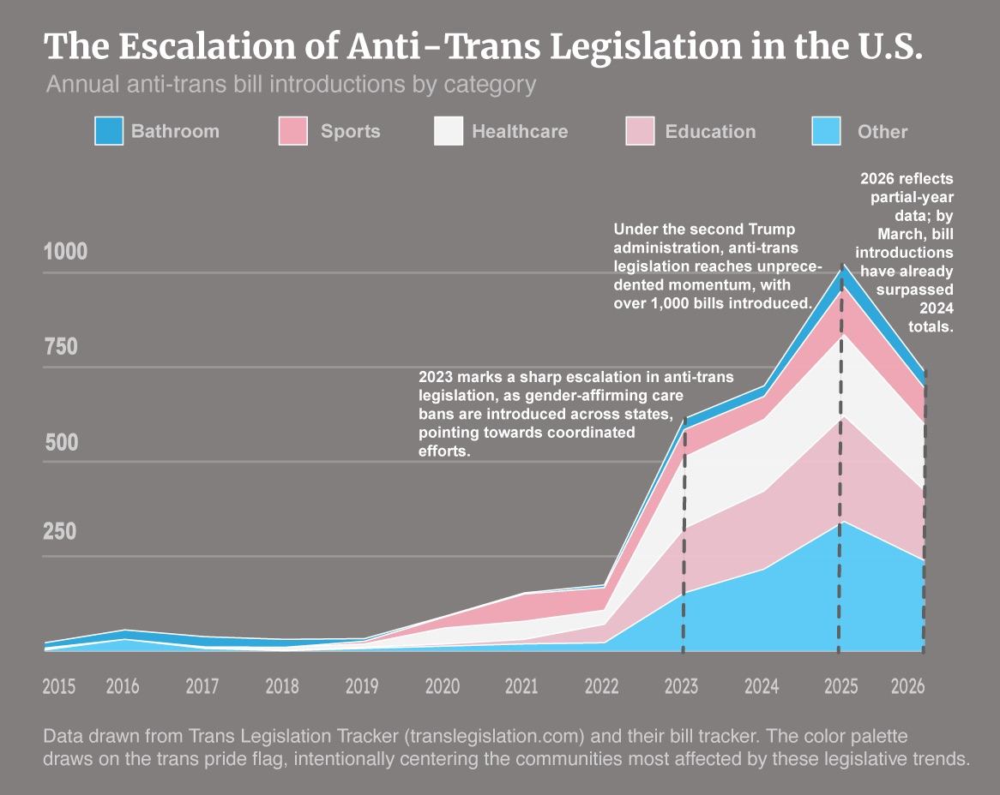

Lately, I feel exhausted from watching the news. Being trans right now comes with a kind of constant background stress that is difficult to explain if you are not living it. It shows up in small ways: checking the news, texting friends about a new bill, wondering whether something that used to feel stable will suddenly change. It also shows up in bigger ways: fear about healthcare, about where it is safe to live, and about what the next few years might look like.
This project begins from that feeling, but it does not stay there. I wanted to understand the scale of what is happening: how many bills are being introduced, what parts of trans life they target, where they are concentrated, and how many people are living under these political conditions.
“It really sucks to be the canary in the coal mine.”
— Trans student at Brown, 22The escalation is not subtle.
Anti-trans legislation was not always introduced at this scale. Since 2023, the number of bills has risen sharply, turning what might look like scattered state-level conflict into a sustained national pattern.

Source: Trans Legislation Tracker. 2026 should be omitted or clearly marked because it is partial-year data.
Introduced bills still matter, even when they do not pass.
A bill does not need to become law to change how people feel in their own communities. Introduced legislation signals what lawmakers are willing to debate, whose lives are treated as politically negotiable, and which narratives are being given institutional power.

This chart will compare introduced bills with bills signed into law, depending on available bill-status data.
“It feels like everybody has just given up on us. Why do we have to prove that we are human too?”
— Trans student at Brown, 19Policy geography is also emotional geography.
Counting bills alone can make the issue feel abstract. Pairing policy environments with state-level estimates of the trans population shifts the question from “how many bills are there?” to “how many people are living under these conditions?”

Sources: Trans Legislation Tracker, ACLU, and UCLA Williams Institute state-level transgender population estimates.
How I chose the data
I use the Trans Legislation Tracker as my primary source because it offers a broad and detailed accounting of anti-trans bills across the United States. This matters because anti-trans legislation does not only appear in obvious forms, such as sports bans or healthcare restrictions. Some bills work by redefining legal categories of “male” and “female,” restricting recognition documents, limiting school policies, or creating administrative barriers that make trans life harder to navigate.
I also use the ACLU tracker as a comparison point and the UCLA Williams Institute for estimates of the transgender population by state. These estimates allow the project to move beyond bill counts and ask how many people may be affected by different policy environments. The Trevor Project is included only as broader context on LGBTQ youth mental health. I do not use it to claim that legislation directly causes specific mental health outcomes, but to show why hostile policy climates matter.
Anti-trans legislation is often discussed as a policy trend. But for trans people, it is also a daily atmosphere. The numbers matter because they show scale. The stories matter because they show what scale feels like from inside.